VOLKSWAGEN PASSAT (pierwszy właściciel, salon Polska) – komfortowe kombi w wersji Highline, oferujące bogate wyposażenie i nowoczesne technologie. Samochód w eleganckim srebrnym kolorze, zarejestrowany po raz pierwszy w lutym 2019 roku (23.02.2018).
✨ Wyposażenie (wersja Highline + dodatki):
Dzień dobry,
Oferuję na sprzedaż wyjątkowo zadbanego, dynamicznego i świetnie wyposażonego Volkswagena Passata B8 Variant w bogatej wersji Highline.
Samochód napędzany jest mocnym i elastycznym silnikiem benzynowym 2.0 TSI o mocy 220 KM, współpracującym z cenioną, bezawaryjną 6-stopniową automatyczną skrzynią biegów DSG (DQ250).
📋 Pochodzenie i historia pojazdu:
Salon Polska: Samochód został zakupiony jako nowy w polskim salonie Volkswagena w Łodzi (ul. Niciarniana). Data pierwszej rejestracji to 23.02.2018 roku.
Od początku w jednych rękach: Jestem pierwszym i jedynym właścicielem pojazdu od nowości.
Przebieg: Oryginalny przebieg wynosi 195 000 km
Bezwypadkowy: Samochód ma wszystkie oryginalne szyby, konstrukcję oraz poduszki powietrzne, które są w 100% oryginalne i nigdy nie były naruszone.
Incydent drogowy (2018 rok): W październiku 2018 roku (przy przebiegu zaledwie 12 000 km) doszło do drobnego zdarzenia – inna kierująca podczas zmiany pasa ruchu przytarła bok auta, w wyniku czego lakierowane były przedni oraz tylny błotnik od strony pasażera. Naprawa została wykonana bezgotówkowo z ubezpieczenia sprawczyni wyłącznie w autoryzowanym serwisie (Krotowski w Ząbkach). Posiadam pełną dokumentację zdjęciową sprzed naprawy oraz faktury z ASO do wglądu dla zainteresowanych.
🔧 Stan techniczny i przechowywanie:
Auto jest w 100% sprawne mechanicznie, regularnie serwisowane i nie wymaga absolutnie żadnego wkładu finansowego – wsiadać i jeździć. Przez cały okres użytkowania samochód jest stale garażowany. Jak na swój wiek i przebieg auto jest bardzo zadbane, choć oczywiście posiada normalne ślady użytkowania wynikające z codziennej eksploatacji (m.in. delikatnie przetartą kierownicę oraz drobne ryski na lakierze – wnętrze jest czyste, a auto od osoby niepalącej).
🎁 Dodatki w cenie:
Do samochodu dołączam:
📄 Podsumowanie i ważna informacja:
Nie jestem handlarzem – auto jest moją własnością, a historia jest w 100% jasna i transparentna. Proszę szanować mój i swój czas – stan pojazdu jest dokładnie taki, jak w opisie, nie ma tu żadnych ukrytych niespodzianek.
Samochód do obejrzenia w Warszawie (Wilanów). Zapraszam do kontaktu telefonicznego oraz na oględziny i jazdę próbną osoby naprawdę zainteresowane zakupem.
Dane techniczne:
VIN: WVWZZZ3CZJE045324
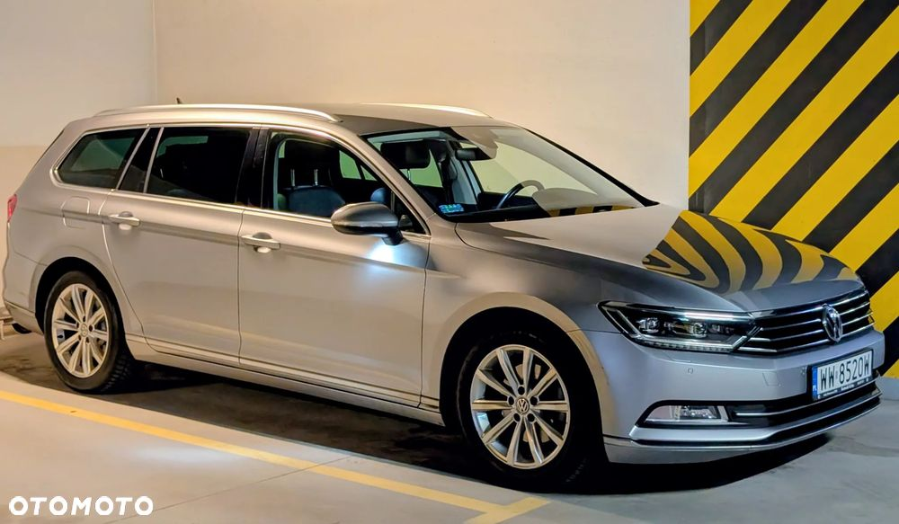
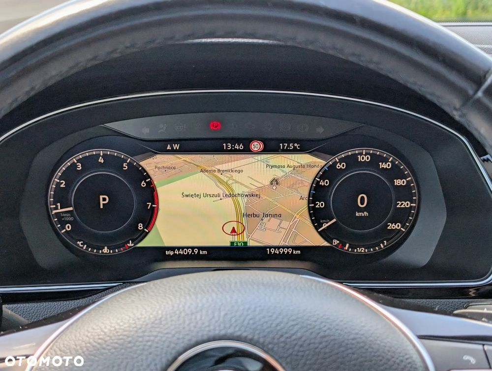
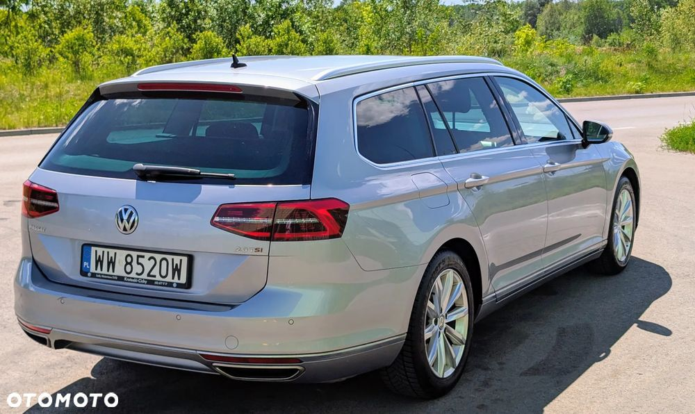

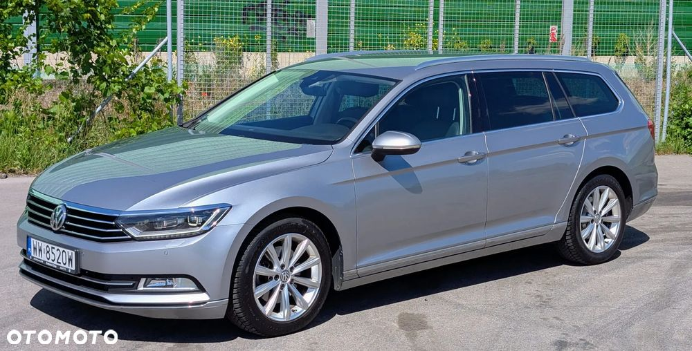
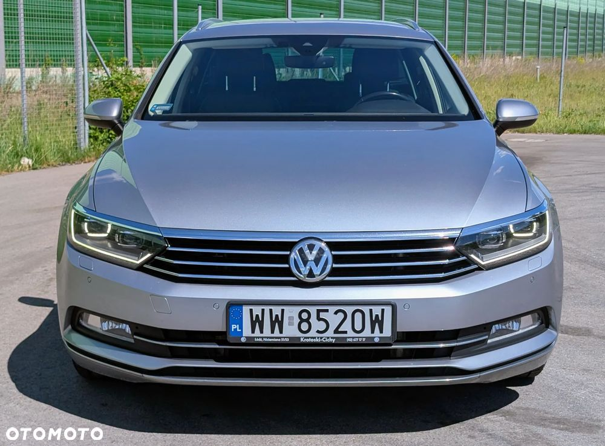
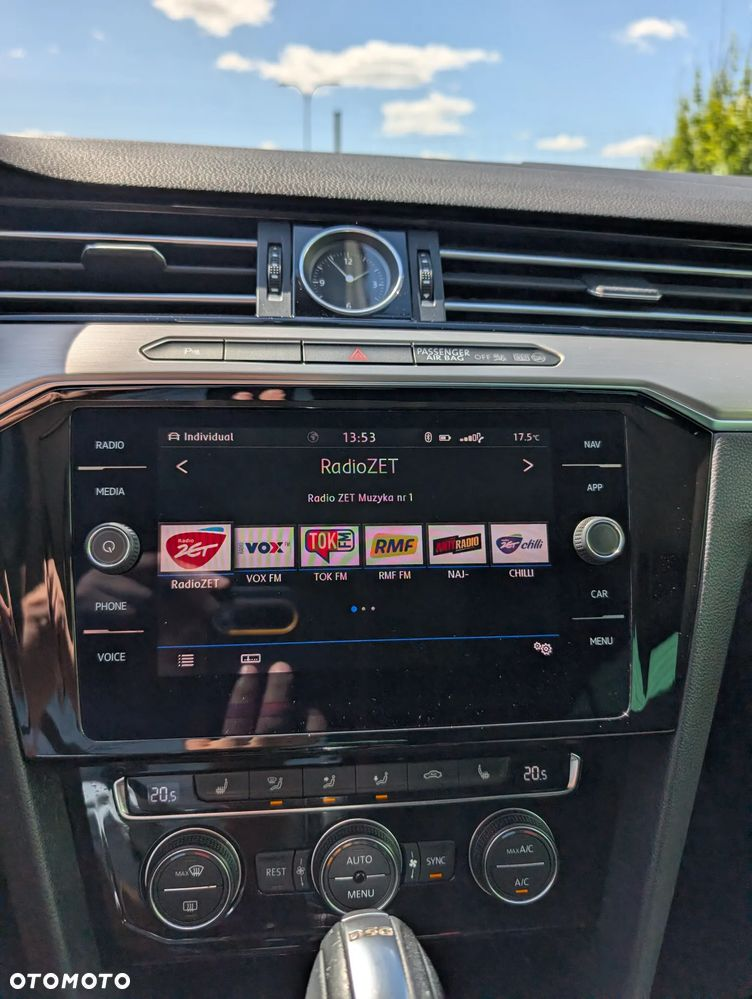
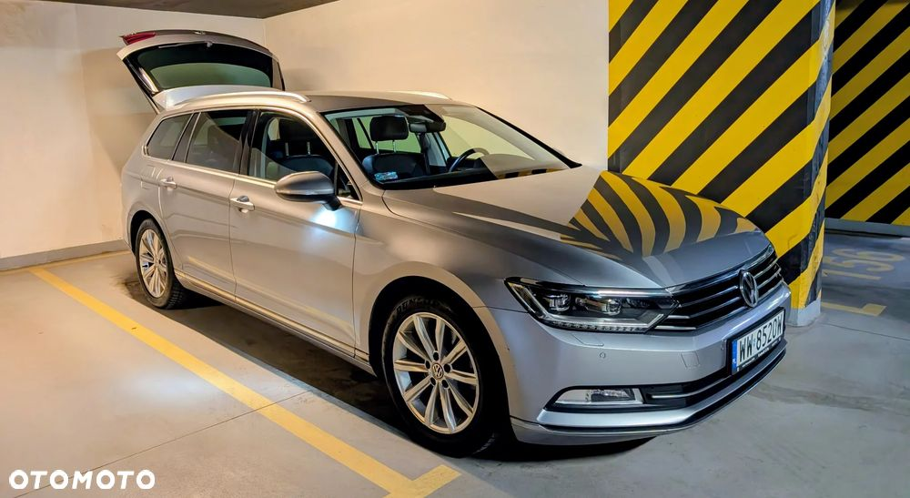
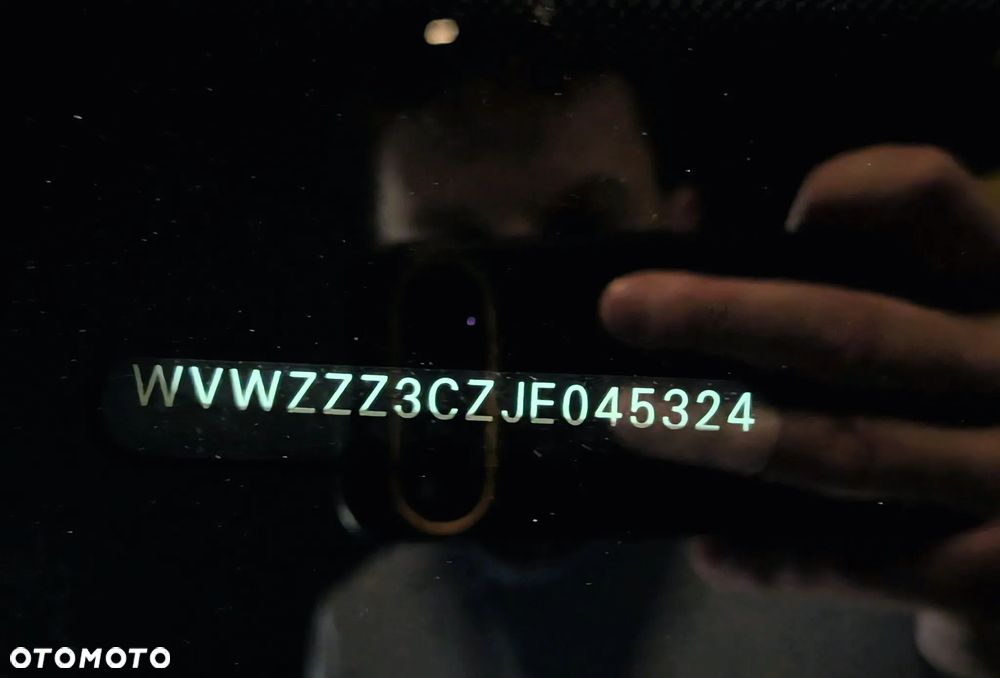
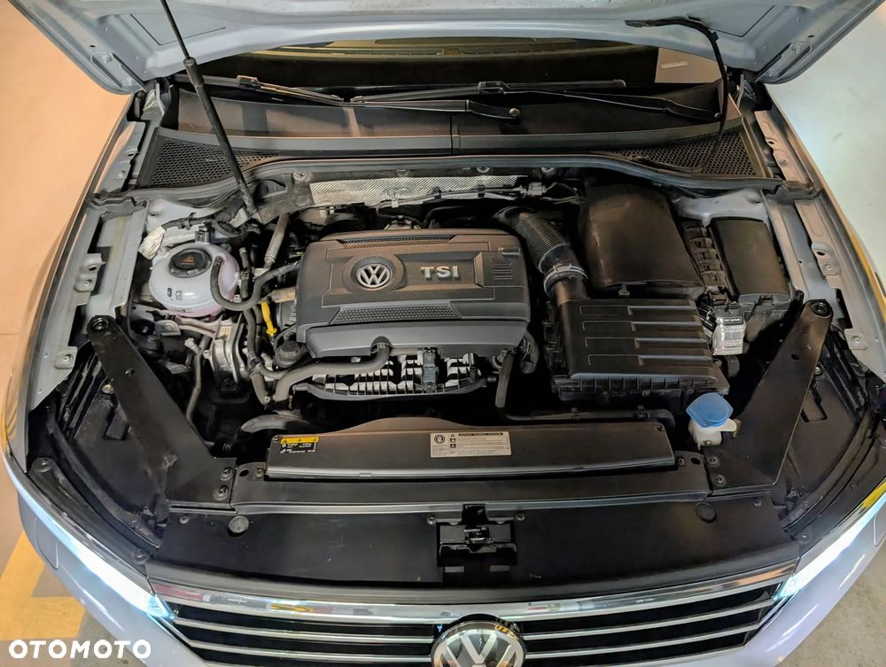
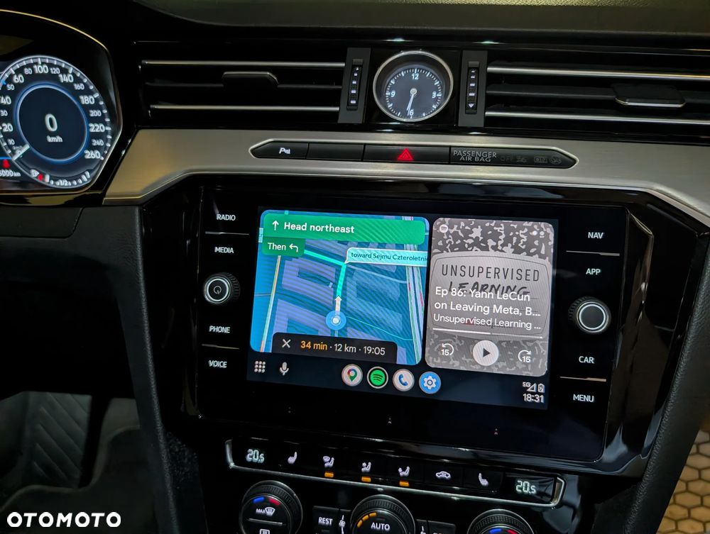

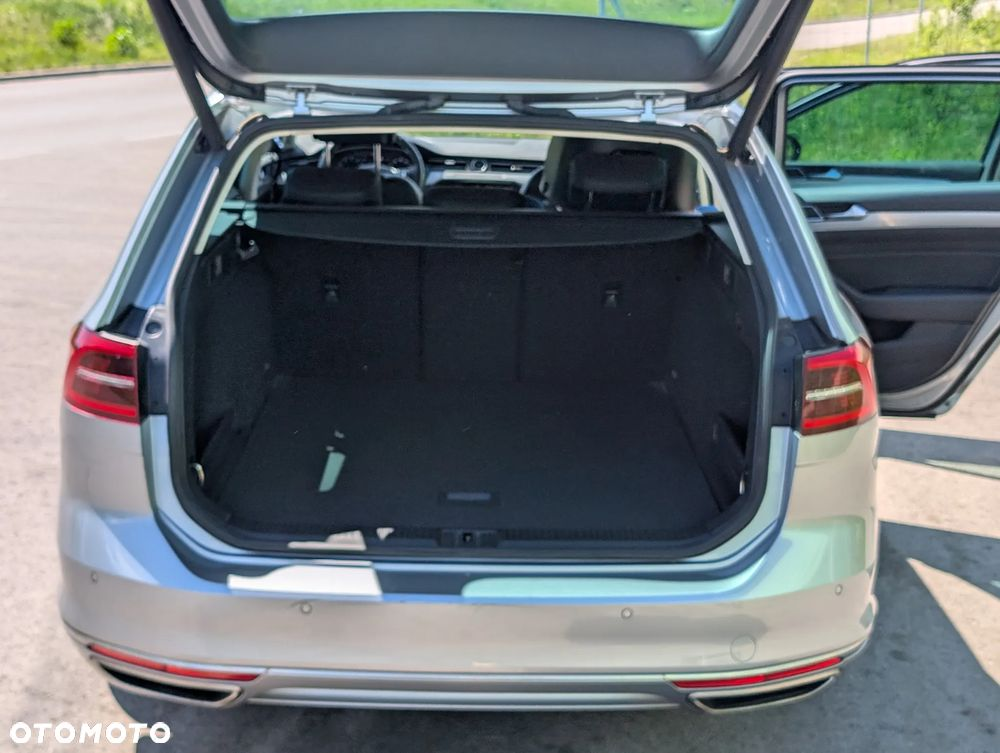


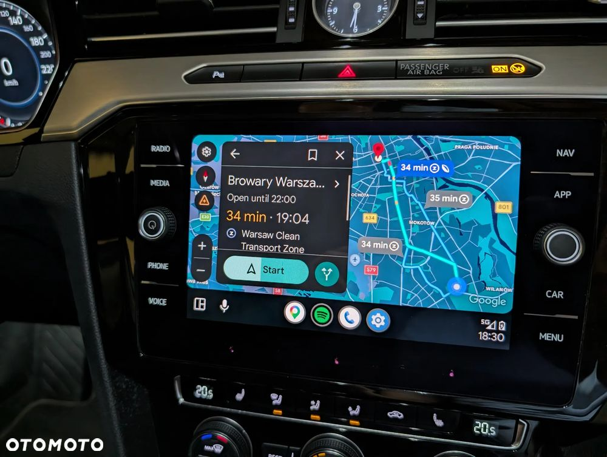

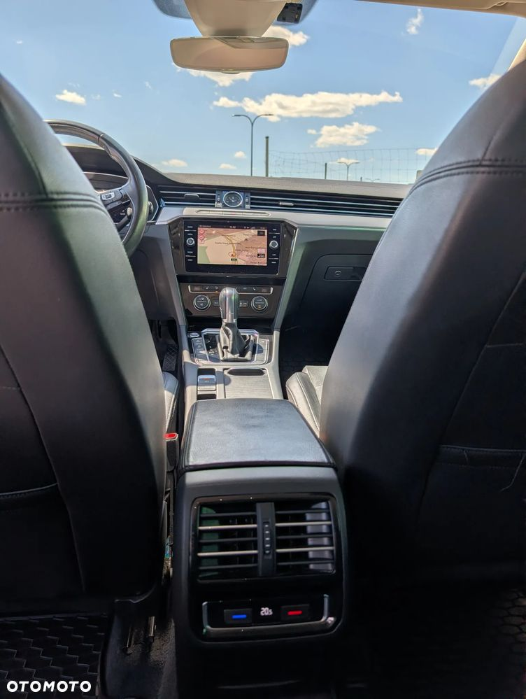
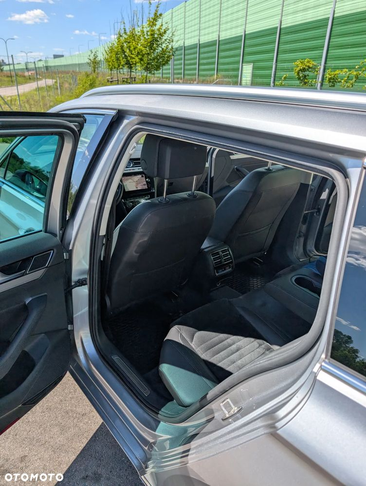